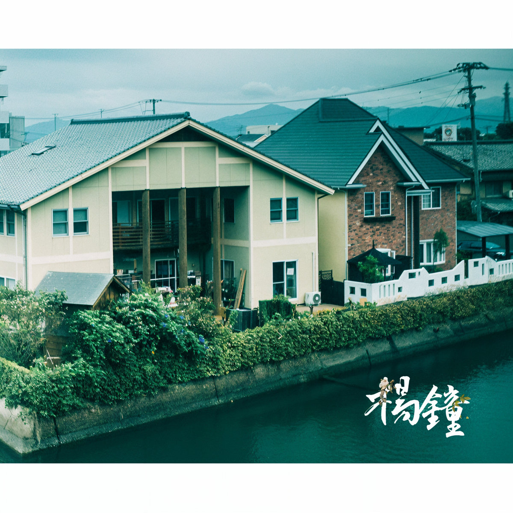

作品集
音樂創作、聲音裝置與現場演出的完整紀錄
駐村經驗
2019
July
Torhaus Wehlen Gallery (Outsideininsideoutinsideoutoutsidein)
Stadt Wehlen, Germany
2022
September
Nanjo Art Museum
Okinawa, Japan
2023
March
Sapporo Tenjinyama Art Studio
Sapporo, Japan
2024
March, September
Sapporo Tenjinyama Art Studio
Sapporo, Japan
2024
November
The Tobichi Museum
Tatsuno, Japan
2025
March, September
Sapporo Tenjinyama Art Studio
Sapporo, Japan
2026
March
Sapporo Tenjinyama Art Studio
Sapporo, Japan
2025
Mouth Fur (口毛)
Choreographer: Shih Min-Wen
2023
THE DISTANT LAND BETWEEN INNER GALAXIES
Choreographer: Cristina Negucioiu, Brno
2022
夯枷 (giâ-kê)
Choreographer: Shih Min-Wen
2023
Silent to Sound (無聲to有聲), Kaohsiung Museum of Fine Arts
Dancers: Qiu Yiwen (Cloud Gate), Shih Min-Wen
2022
Tiger Arrives Dancing (虎來跳舞), Kaohsiung Museum of Fine Arts
Dancers: Phill, Marisa, Hsu Chih-Heng, Ho Shu-Ling
2021
Sound Creation (造音), Kaohsiung Museum of Fine Arts
Solo modular synthesizer performance
2021
㕰
Choreographer: Shih Min-Wen, Huashan Wumei Theater
2019
荒衍 (Wandering)
Choreographer: Shih Min-Wen
2018
SUPERBEING (變態), Cloud Gate 2 Spring Riot
Choreographer: Liu Kuan-Hsiang
2018
酷刑姿勢練習 (Torture Posture Practice)
Choreographer: Liu Kuan-Hsiang, Xiqu Center
2017
Karma and Kids (棄者)
Choreographer: Liu Kuan-Hsiang, Cloud Gate Art Makers

